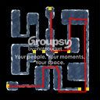

บลูซิริโกะหายากด้วย - - แล้ว ECO Ticket นี่มีไว้ทำอะไรหรือครับ แล้วกระ เป๋าหลังของอาชีพที่ไม่ใช้Backpacker นี่มีลูกใหญ่กว่านี้ไหมครับตอนนีมี แบกได้แค่ 15 40เองอ่ะ
kabior นี่คือไอเทมไรอครับ
คำถามปลีกย่อยขอให้มาตั้งในกระทู้นี้คะ ตอบวันต่อวันคะ
 โดย ECO » จันทร์ 10 มี.ค. 2008 10:30 pm
โดย ECO » จันทร์ 10 มี.ค. 2008 10:30 pm
Blue Siriko ถ้าเอาชาวนาที่มีปราชญ์พืชไปตีจะตกง่ายขึ้นครับbomb038 เขียน:บลูซิริโกะหายากด้วย - - แล้ว ECO Ticket นี่มีไว้ทำอะไรหรือครับ แล้วกระ เป๋าหลังของอาชีพที่ไม่ใช้Backpacker นี่มีลูกใหญ่กว่านี้ไหมครับตอนนีมี แบกได้แค่ 15 40เองอ่ะ
kabior นี่คือไอเทมไรอครับ
ECO Ticket จริงๆแล้วมันจะใช้แลกเป็นบ้านแบบต่างๆนะครับเพียงแต่ของไทยไม่ให้แลก(จัดบ้านยัดลงมอลล์หมด-*-)
ส่วนกระเป๋าของอาชีพอื่นที่ไม่ใช่ Backpacker มันจะแบกได้แค่นั้นแหละครับต้องทำใจหน่ออย
ขอแนะนำให้เอาของที่หนักๆหรือมีจำนวนเยอะยัดลงคลังไปหรือถ้าไม่ใช้ให้ขายทิ้งนะครับ
ไม่งั้นจะเป็นแบบผมของล้นคลังจนต้องเอาไปให้ตัวชาวนาแบกของ - -
kabior จริงๆแล้วมันคือ Caviar น่ะแหละครับหาดรอปได้จาก Kerby Archen ที่แมพทางเหนือ
- ECO
- Dark Warrior

- โพสต์: 276285
- ลงทะเบียนเมื่อ: พุธ 26 ต.ค. 2011 9:31 pm
 โดย ECO » จันทร์ 10 มี.ค. 2008 10:39 pm
โดย ECO » จันทร์ 10 มี.ค. 2008 10:39 pm
eco ticket.... ไอเท็มที่(เคย)มีประโยชน์?? จริงๆไว้ใช้เปลี่ยนเเบบบ้านสวยลอย เเต่ตอนนี้บ้านโดนลงมอลล์ไปล่ะ  hock: .....
hock: .....
เคยมีกิจกรรมที่บริษัทจัดนะ ให้เอาeco ticketไปเเลกของ เเต่ยังไม่มีวี่เเววรอบ2จะโผล่มา :oops:
กระเป๋านึกไม่ออก รู้เเต่ของสายBP - -\''' เป้ที่ใส่ได้ทุกอาชีพของlv.8 ก็ได้น้อย- -
kabior>>>คาเวียร์(cavior) ไข่ปลาhock: ตกจากหนามดำkerby ที่เหนือ , กบที่ดันฟาอีส
เคยมีกิจกรรมที่บริษัทจัดนะ ให้เอาeco ticketไปเเลกของ เเต่ยังไม่มีวี่เเววรอบ2จะโผล่มา :oops:
กระเป๋านึกไม่ออก รู้เเต่ของสายBP - -\''' เป้ที่ใส่ได้ทุกอาชีพของlv.8 ก็ได้น้อย- -
kabior>>>คาเวียร์(cavior) ไข่ปลา
- ECO
- Dark Warrior
- โพสต์: 276285
- ลงทะเบียนเมื่อ: พุธ 26 ต.ค. 2011 9:31 pm
 โดย ECO » จันทร์ 10 มี.ค. 2008 11:03 pm
โดย ECO » จันทร์ 10 มี.ค. 2008 11:03 pm
ผมเจอของดีๆ แต่ริ้ง ดันเสีย T T
14. ชุด Maid
- ของคุณ bossaria http://www.onenet.co.th:8080/board/viewtopic.php?t=4057
15. Recieve ผสมไอเท็ม
- ของคุณ Cerulean http://www.onenet.co.th:8080/board/viewtopic.php?t=4027
16. ยายอมผม
- ของคุณ Reenei http://www.onenet.co.th:8080/board/viewtopic.php?t=4085
17. ข้อมูลเควสต่างๆ
- ของคุณ 12pm http://www.onenet.co.th:8080/board/viewtopic.php?t=2231
แล้วๆ คลังผมเต็มแล้วอ่ะ - -ผมงงกับที่เก็บของ จริงๆ ถ้าฝาก ไว้เหนือก็ไปเอาออกที่เหนือ
ดันใช้ช่องต้องที่อื่นรวมกันอีก
14. ชุด Maid
- ของคุณ bossaria http://www.onenet.co.th:8080/board/viewtopic.php?t=4057
15. Recieve ผสมไอเท็ม
- ของคุณ Cerulean http://www.onenet.co.th:8080/board/viewtopic.php?t=4027
16. ยายอมผม
- ของคุณ Reenei http://www.onenet.co.th:8080/board/viewtopic.php?t=4085
17. ข้อมูลเควสต่างๆ
- ของคุณ 12pm http://www.onenet.co.th:8080/board/viewtopic.php?t=2231
แล้วๆ คลังผมเต็มแล้วอ่ะ - -ผมงงกับที่เก็บของ จริงๆ ถ้าฝาก ไว้เหนือก็ไปเอาออกที่เหนือ
ดันใช้ช่องต้องที่อื่นรวมกันอีก
- ECO
- Dark Warrior
- โพสต์: 276285
- ลงทะเบียนเมื่อ: พุธ 26 ต.ค. 2011 9:31 pm
 โดย ECO » จันทร์ 10 มี.ค. 2008 11:17 pm
โดย ECO » จันทร์ 10 มี.ค. 2008 11:17 pm
bomb038 เขียน:ผมเจอของดีๆ แต่ริ้ง ดันเสีย T T
14. ชุด Maid
- ของคุณ bossaria
สามารถหาซื้อได้ที่ดันเจี้ยน Frozen Cave ชั้น3มั้งครับ
15. Recieve ผสมไอเท็ม
- ของคุณ Cerulean
อันนี้นี่ไม่แน่ใจว่าเป็นการ Purify ไอเทมรึเปล่านะครับ(ผมก็ไม่ได้ดูเนื้อหาในลิ้งค์เลย)ถ้าใช่ตอนนี้มีตำราการกลั่นไอเทมอยู่ที่ฟอรั่มของแบคแพคเกอร์แล้ว
16. ยายอมผม
- ของคุณ Reenei
สามารถทำได้จากการนำ powder สีต่างๆ(เช่นRed Powder)ไปผสมกับcarrier oil ครับแล้วก็เค้าเปลี่ยนลิ้งค์เป็นอันนี้แล้วนะครับสำหรับยาย้อมผม
http://board.onenet.co.th/viewtopic.php?t=04085
17. ข้อมูลเควสต่างๆ
- ของคุณ 12pm
ดูจากลิ้งค์นี้ก็ได้ครับ
http://board.onenet.co.th/viewtopic.php?t=09598
แล้วๆ คลังผมเต็มแล้วอ่ะ - -ผมงงกับที่เก็บของ จริงๆ ถ้าฝาก ไว้เหนือก็ไปเอาออกที่เหนือ
ดันใช้ช่องต้องที่อื่นรวมกันอีก
คลังเก็บของเกมนี้ก็เป็นแบบนี้แหละครับ - -ถ้าฝากไว้ที่ไหนเวลาจะไปเอาออกก็ต้องไปเอาออกจากที่นั่นแถมต่อให้มีไอเทมเหมือนกันแต่อยู่คนละเมืองมันจะนับเป็นไอเทม2ชิ้นอีก
แต่สามารถแก้ปัญหาได้หากมีตัวละครที่เป็นอาชีพ Merchant เพราะอาชีพนี้สามารถส่งของจากเมืองนึงไปอีกเมืองได้
- ECO
- Dark Warrior
- โพสต์: 276285
- ลงทะเบียนเมื่อ: พุธ 26 ต.ค. 2011 9:31 pm
 โดย ECO » อังคาร 11 มี.ค. 2008 7:53 pm
โดย ECO » อังคาร 11 มี.ค. 2008 7:53 pm
bomb038 เขียน:หน้าด่านมอร์ก(ด้านนอกแมปเหมืองตะวันตก) อยู่ตรงไหนหรือครับ
เดินจากเมืองมอร์คออกมาก็ถึงละ... : P
ถ้ามาจากเมืองกลางก็ให้ออกมาด้านทิศตะวันตก (เปิดแม็ปใหญ่ดูนะ) ซ้าย ซ้าย ลง ลง จะถึงแม็ป warship island นั่นแหละหน้าด่านเมืองมอร์ค *-*
- ECO
- Dark Warrior
- โพสต์: 276285
- ลงทะเบียนเมื่อ: พุธ 26 ต.ค. 2011 9:31 pm
 โดย ECO » อังคาร 11 มี.ค. 2008 11:28 pm
โดย ECO » อังคาร 11 มี.ค. 2008 11:28 pm
สำหรับเรื่องชุดนั้นผมคงต้องถามก่อนว่าคุณใส่ชุดอะไรอยู่bomb038 เขียน:ขอบคุณครับผมจะไปดูชุด 30 แต่ทำไมมันแพงไปอ่ะซื้อไม่ได้ 33 K - -
แล้ว AntidoteFruitนี่หาจากไหนครับ จะหามือ 2 ไม่เห็นมีคนขายเลย
ถ้าชุดของเวลต่ำจริงๆก็คงต้องซื้อเปลี่ยน
แต่ส่วนตัวของผมใส่ชุดเวล27(Warm Coat) ไปจนเวล35ซื้อชุดประจำอาชีพใส่เลย
แต่ถ้าต้องการชุดเวล30จริงๆผมขายให้ก็ได้(พอดีมีอยู่ในคลัง)ถ้าเซิฟโมจินะ
ขอแนะนำว่าชุดแต่ละชุดควรจะใส่เก็บเลเวลเกิน7เลเวลนะครับไม่งั้นจะไม่คุ้ม
แล้วก็ชุดหลังจากนี้แต่ละชุดนั้นราคาจะแพงขึ้นเรื่อยๆนะครับ
พอดีผมใช้วิธีส่งเควสเวล29 Raigyou sweat จนเวล35น่ะครับเลยไม่จำเป็นต้องใช้ชุดเวล30
AntidoteFruit สามารถหาได้จาก Green Pururu[map : Fareast highway] magician[map : ทางเหนือ]
ผมขอแนะนำให้ตี Green Pururu น่ะครับเพราะ magician มันเสกพิษตลอด
ปล.รู้สึกเรปนี้บ่นยาวจัง :?
- ECO
- Dark Warrior
- โพสต์: 276285
- ลงทะเบียนเมื่อ: พุธ 26 ต.ค. 2011 9:31 pm
 โดย ECO » อังคาร 11 มี.ค. 2008 11:31 pm
โดย ECO » อังคาร 11 มี.ค. 2008 11:31 pm
^
^
^
Antidote fruit ตกจาก green pururu , magician
ชุด30 มือสอง เหมือนเห็นเเว๊บๆ ที่สะพานตะวันออกค่ะ(ทาโกะนะ)
ไม่เเน่ใจว่ายังอยู่รึเปล่าhock:
edit: ตอบไม่ทันคุณNewlegend อีกล่ะ*-* ตอบไวจริงๆ :P
เข้ามากระทู้นี้ทีไร พอเห็นคนตอบรู้สึกดีจังเเฮะ เเบ่งปันข้อมูลช่วยผู้เล่นคนอื่นๆ :wink:
^
^
Antidote fruit ตกจาก green pururu , magician
ชุด30 มือสอง เหมือนเห็นเเว๊บๆ ที่สะพานตะวันออกค่ะ(ทาโกะนะ)
ไม่เเน่ใจว่ายังอยู่รึเปล่า
edit: ตอบไม่ทันคุณNewlegend อีกล่ะ*-* ตอบไวจริงๆ :P
เข้ามากระทู้นี้ทีไร พอเห็นคนตอบรู้สึกดีจังเเฮะ เเบ่งปันข้อมูลช่วยผู้เล่นคนอื่นๆ :wink:
- ECO
- Dark Warrior
- โพสต์: 276285
- ลงทะเบียนเมื่อ: พุธ 26 ต.ค. 2011 9:31 pm
 โดย ECO » อังคาร 11 มี.ค. 2008 11:41 pm
โดย ECO » อังคาร 11 มี.ค. 2008 11:41 pm
พอดีผมเข้ามาอ่านกระทู้นี้ทุกๆ10นาทีเลยมั้งครับ(จะกลายเป็นผีเฝ้าบอร์ดนี้แล้ว)
คนมันว่างจัดน่ะครับเลยมาตอบกระทู้นี้(วันๆไม่มีอะไรทำจะเก็บเวลก็ไม่ได้เลือดมอน*2อยู่)
อีกอย่างมันรู้สึกดีใจที่ได้ตอบคำถามให้ผู้เล่นที่ยังไม่ค่อยรู้เรื่องน่ะครับ :wink:
ตอนนี้นี่เห็นชื่อคุณ bomb038 เข้ามาตอบกระทู้นี้นี่จะรู้สึกดีใจเลยล่ะครับ "จะได้ตอบคำถามให้แก่กับคนที่ไม่รู้อีกแล้ว"
ปล.ช่วยเข้าใจผมหน่อยเถอะคนมันว่างจัด...
ปล2.แต่ข้อมูลของผมนั้นเชื่อถือได้ราวๆ70%นะครับเนื่องจากว่าตอนนี้เพิ่งเล่นมาได้ถึงเวล58เพราะงั้นข้อมูลหลังจากนี้ผมไม่ค่อยมีนะครับ
เช่น ข้อมูลของหอแสงเนี่ยผมไม่รู้เรื่องเลยไม่เคยไปกับเค้าซักที
รวมทั้งข้อมูลของบอสด้วยไม่เคยไปล่า - -
เพราะงั้นคนที่ข้อมูลแน่นกว่าผมก็ช่วยเข้ามาตอบกันเยอะๆนะครับ
คนมันว่างจัดน่ะครับเลยมาตอบกระทู้นี้(วันๆไม่มีอะไรทำจะเก็บเวลก็ไม่ได้เลือดมอน*2อยู่)
อีกอย่างมันรู้สึกดีใจที่ได้ตอบคำถามให้ผู้เล่นที่ยังไม่ค่อยรู้เรื่องน่ะครับ :wink:
ตอนนี้นี่เห็นชื่อคุณ bomb038 เข้ามาตอบกระทู้นี้นี่จะรู้สึกดีใจเลยล่ะครับ "จะได้ตอบคำถามให้แก่กับคนที่ไม่รู้อีกแล้ว"
ปล.ช่วยเข้าใจผมหน่อยเถอะคนมันว่างจัด...
ปล2.แต่ข้อมูลของผมนั้นเชื่อถือได้ราวๆ70%นะครับเนื่องจากว่าตอนนี้เพิ่งเล่นมาได้ถึงเวล58เพราะงั้นข้อมูลหลังจากนี้ผมไม่ค่อยมีนะครับ
เช่น ข้อมูลของหอแสงเนี่ยผมไม่รู้เรื่องเลยไม่เคยไปกับเค้าซักที
รวมทั้งข้อมูลของบอสด้วยไม่เคยไปล่า - -
เพราะงั้นคนที่ข้อมูลแน่นกว่าผมก็ช่วยเข้ามาตอบกันเยอะๆนะครับ
- ECO
- Dark Warrior
- โพสต์: 276285
- ลงทะเบียนเมื่อ: พุธ 26 ต.ค. 2011 9:31 pm
 โดย ECO » พุธ 12 มี.ค. 2008 5:46 am
โดย ECO » พุธ 12 มี.ค. 2008 5:46 am
bomb038 เขียน:ผมเจอของดีๆ แต่ริ้ง ดันเสีย T T
14. ชุด Maid
- ของคุณ bossaria http://www.onenet.co.th:8080/board/viewtopic.php?t=4057
15. Recieve ผสมไอเท็ม
- ของคุณ Cerulean http://www.onenet.co.th:8080/board/viewtopic.php?t=4027
แวะมาตอบก่อนไปนอน -w-"
ชุดเมดไปซื้อได้ที่นี่ค่ะ

ตรงจุดแดง ๆ ขึ้นไปชั้น 3 ราคา 2100G แนะนำว่าถ้ายังเลเวลยังต่ำอยู่ ก็หาคนเวลสูงหน่อยสิงไปซื้อนะคะ มันโหดเหมือนกัน ^^" ถ้าสูงแล้วก็ลุยเลยค่ะ สบายมาก
ใส่ได้ตอนเลเวล 1 ค่ะ
ลูทวิ่งค่ะ
B1


B2 B3
B3 
NPC ขายของจะอยูที่หมายเลข 1 ^^
อันนี้ กระทู้ recipe ต่าง ๆ
=~ R E C I P E S ~ How to Make Medicine~
=~ R E C I P E S ~ Life With Tree ~ สกิลทำไม้คับ
=~ R E C I P E S ~ How To Plant For Adult 1.2.3 ~
=~ R E C I P E S ~ Weaponry Recipes ~
=~ R E C I P E S ~ Accessory Recipes ~เปิดให้บริการแล้วครับ~
=~ R E C I P E S ~ Evening Meal Recipes ~
=~ R E C I P E S ~ Expert in Making a Dress Recipes ~
=~ R E C I P E S ~ Book of Refine Recipes ~
=รวมลิงค์เครื่องประดับตัวละครและของแต่งบ้าน (อัพเดทเรื่อยๆ)
=[ G E M S T O N E : เรื่องของเพชร พลอย ]
หมดแล้วมั้ง (' ' ) รวมลิงค์
สู้ ๆ เกมรายละเอียดมันเยอะ พยายามเข้า >_<!!
- ECO
- Dark Warrior
- โพสต์: 276285
- ลงทะเบียนเมื่อ: พุธ 26 ต.ค. 2011 9:31 pm
Re: ใส้pet เปิด golem
 โดย ECO » พุธ 12 มี.ค. 2008 5:48 am
โดย ECO » พุธ 12 มี.ค. 2008 5:48 am
TerZh เขียน:คืออยากรู้ว่า ขณะใส่pet แล้วใช้โกเลม petจะยังอยู่หรือไม่อ่ะคับ
ปกติการใช้โกเล็ม คือการ log out ออกของผู้เล่นให้อยู่ในสภาพโกเล็ม เพราะงั้น pet ก็ไม่อยู่เน่อ -w-
- ECO
- Dark Warrior
- โพสต์: 276285
- ลงทะเบียนเมื่อ: พุธ 26 ต.ค. 2011 9:31 pm
 โดย ECO » พุธ 12 มี.ค. 2008 10:37 am
โดย ECO » พุธ 12 มี.ค. 2008 10:37 am
น่าจะลดลงนะครับเพราะว่าถ้าโดนรุมค่าการหลบหลีกจะลดลงด้วยmasato เขียน:ถ้าเราโดนรุมแล้ว ค่าdefของเราจะลดมั้ยอ่ะครับ
พอดีเห็นหมาdefเกือบๆ110แล้ว พอโดนพวกInf.Ganganรุมมันขึ้นdamageทีละ6-7อ่ะ
ปกติเห็นโดนทีละ4-6 - -?
เพราะงั้นค่าdefน่าจะลดลงครับ
ขอถามมั่งนะครับคือเนื่องจากเพิ่งได้สวนลอยฟ้ามาเลยยังไม่ค่อยรู้เรื่อง
คือผมกะจะเอากรอปรูปที่ได้มาจากกิจกรรมใหม่ไปใส่ในสวนลอยฟ้า
แต่ทว่าผมดันใส่ผิดที่แล้วผมกะจะเอากรอปรูปออกนี่มันเอาออกยังไงหรอครับ
- ECO
- Dark Warrior
- โพสต์: 276285
- ลงทะเบียนเมื่อ: พุธ 26 ต.ค. 2011 9:31 pm
ผู้ใช้งานขณะนี้
่กำลังดูบอร์ดนี้: ไม่มีสมาชิก และ บุคคลทั่วไป 1 ท่าน